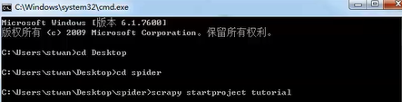
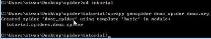
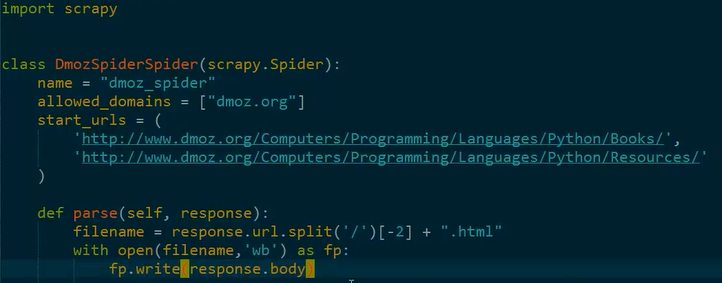
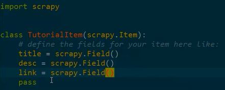
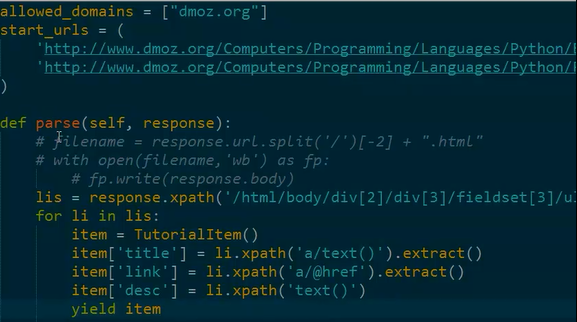

1、安装python2.7
2、安装pip
3、安装lxml
4、安装OpenSSL
5、安装scrapy
注：如果安装过程中碰到问题，请百度/谷歌；或者查看老师博客：http://www.cnblogs.com/python-life
1、Creating a project
2、Defining our Item
3、Writing a spider
4、Writing an Item Pipeline
5、Execute crawl
需要两个网页的源代码
1、创建一个工程，创建工程的命令，scrapy startproject ，tutorial为工程名

2、工程创建成功
3、创建成功之后的目录结构
tutorial/
scrapy.cfg # deploy configuration file
tutorial/ # project's Python module, you'll import your code from here
__init__.py
items.py # project items file
pipelines.py # project pipelines file
settings.py # project settings file
spiders/ # a directory where you'll later put your spiders
__init__.py
4、编写一个spider

5、代码（粘贴对应网站的URL）

6、运行
1、defining our item(item文件已经生成，只需要根据需要定义，改写)

2、改变上次的内容

3、运行（scrapy list 可以列出所有爬虫）
4、将获得的数据存储在数据库中
1、能够正确在自己电脑上安装scrapy；
2、掌握编写一个爬虫的基本步骤；
改进课件中的示例，把获得的数据存储到mysql数据库中
要求：
改写pipelines.py中的class，把item中的数据存储到mysql中；
提示：
1、需要在settings.py中设置启动ITEM_PIPELINES；
2、需要现在mysql数据库中建立相应的表；
3、可以参考scrapy官方文档
【本文由麦子学院独家原创，转载请注明出处并保留原文链接】